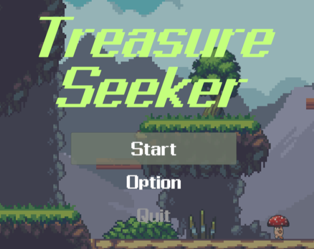

STAGE 01 / UNITY1WEEK
SHIRO MAKER
罠を配置して、侵攻してくる勇者たちから魔王さまを守る戦略パズル。
準備・侵攻・結果・巻き戻しをフェーズとして管理。グリッド上の罠配置、データ駆動のステージ構成、配置を維持したリトライを実装しました。
PLAYER 01 / GAME CLIENT ENGINEER
C# 実務経験を活かし、Unityで「遊び続けたくなる手触り」と、
拡張しやすいゲームの仕組みをつくります。
SELECT A STAGE
企画から設計・実装・UI・デバッグまで、個人で制作したUnityゲームです。
STAGE 01 / UNITY1WEEK
罠を配置して、侵攻してくる勇者たちから魔王さまを守る戦略パズル。
準備・侵攻・結果・巻き戻しをフェーズとして管理。グリッド上の罠配置、データ駆動のステージ構成、配置を維持したリトライを実装しました。

STAGE 02 / PERSONAL PROJECT
探索・戦闘・環境演出を備えた、2D横スクロールアクションのプロトタイプ。
近接コンボ、敵AI、ステージ進行、BGM・環境音・ライティングの切り替えまで実装。肥大化した処理を責務ごとに分け、保守性と拡張性を意識して設計しました。
EQUIPMENT
Unity / C# / Universal RP / Input System / Cinemachine / DOTween / TextMesh Pro
C# 実務経験 5年。ASP.NET Core、TypeScript、SQL Server、Azureを用いた開発経験があります。
Git / GitHub、設計、実装、UI制作、サウンド組み込み、デバッグまで一貫して取り組みます。
NEXT STAGE?
コードや制作物の詳細はGitHubからご確認いただけます。
GITHUB PROFILE ↗